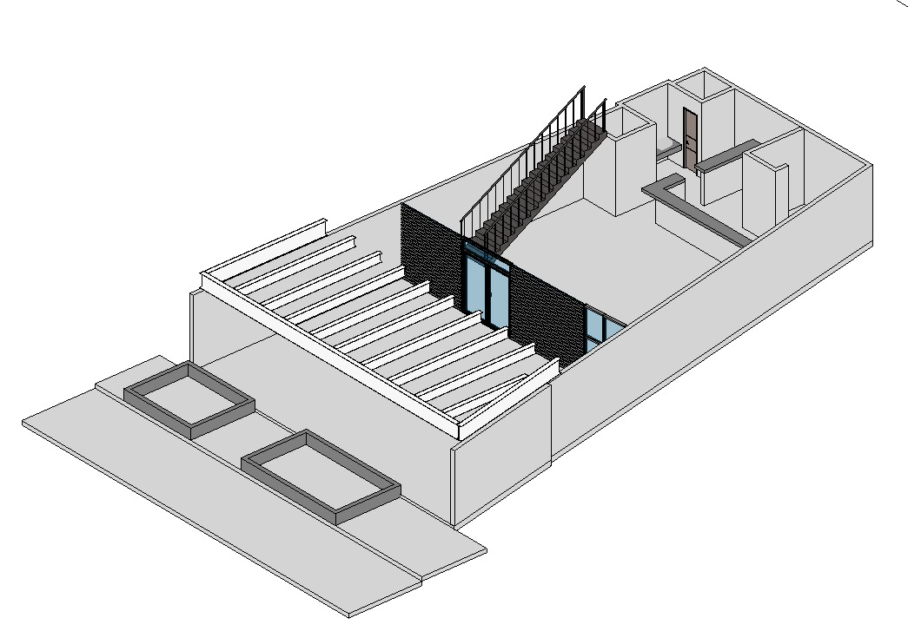
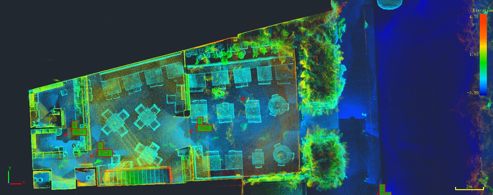

MAGNA
Escáner
LIDAR
Tecnología de escaneo 3D

01 · Documentación
Planos Arquitectónicos
Escaneo láser de alta precisión para documentación de estructuras existentes con exactitud milimétrica.
±2mm
PRECISIÓN
360°
COBERTURA
02 · Inspección
Imagen Térmica
Detección de anomalías térmicas, humedad y pérdidas energéticas con cámaras termográficas integradas.

03 · Visualización
Nube de Puntos 3D
Modelos tridimensionales para análisis estructural y rehabilitación.
04 · Campo
Trabajo en Terreno
Escaneo in situ con tecnología SLAM para captura de datos sin GPS.
MAGNA · INGENIERÍA Y TOPOGRAFÍA
Precisión que
construye
Escáner LIDAR · SLAM · Topografía de precisión
magnaingenieriaytopografia.com